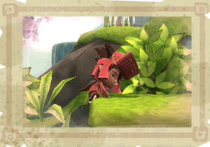

8 |
Commandes de Toku |
 |
Utilise le Stick directionnel pour déplacer Toku. Incline doucement le Stick pour marcher ou incline-le à fond pour courir.
Le bouton Z est le bouton d'action contextuel. Il permet à Toku d'effectuer un certain nombre d'actions (l'action s'affiche dans l'interface du jeu). Ces actions peuvent être :
Ramasser - Les petits objets comme les graines peuvent être ramassés en se plaçant à côté en appuyant sur le bouton Z. Pour lâcher l'objet, appuie de nouveau sur le bouton Z.
Tirer - À l'aide du bouton Z, Toku peut attraper des objets plus lourds comme des légumes ou des interrupteurs à levier. En revanche, sans le pouvoir d'Enril, il n'a pas la force de les déplacer seul.
Planer - Lorsque Toku est équipé de la Cape Jumbrella, tu peux appuyer sur le bouton Z pour le faire planer. Relâche le bouton Z pour le laisser tomber. Toku peut aussi planer s'il tient un hélico-bourgeon. |
 |
 |
 |